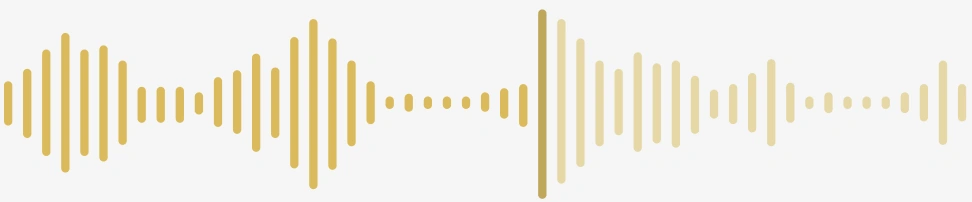
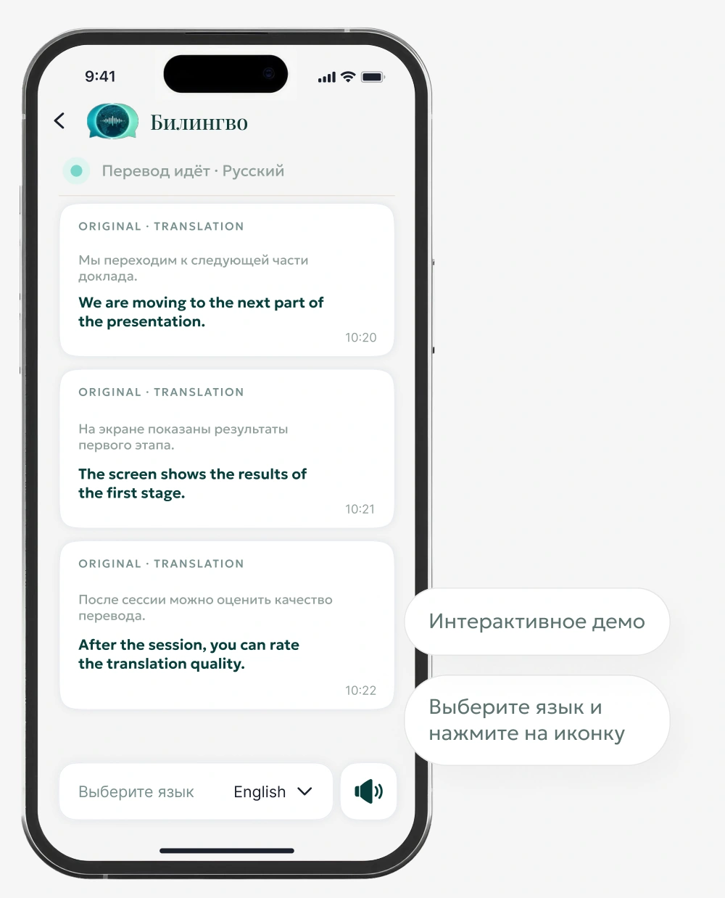
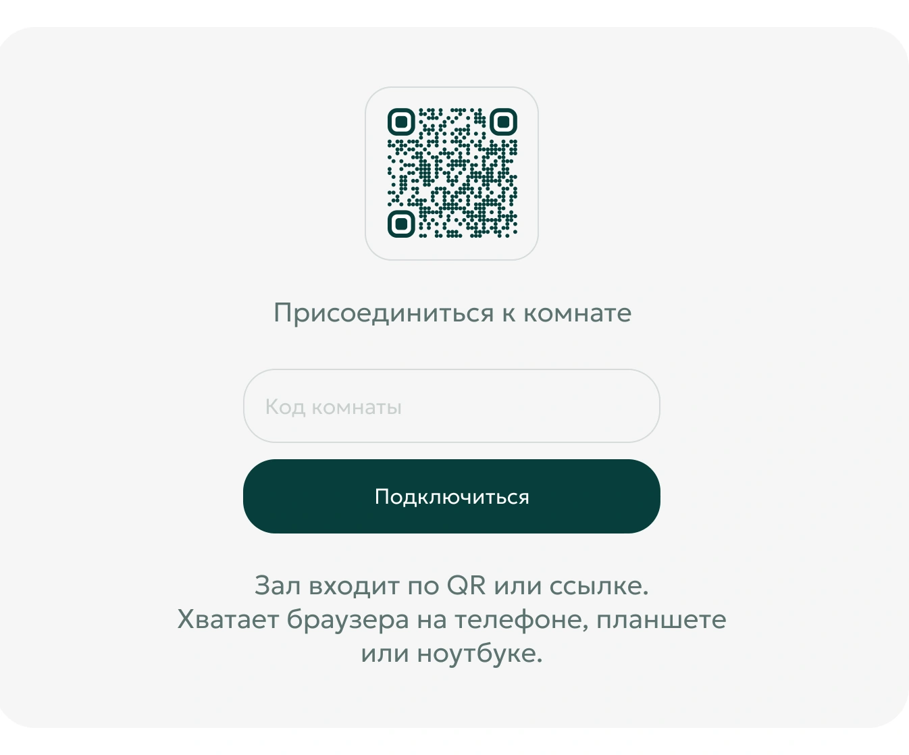
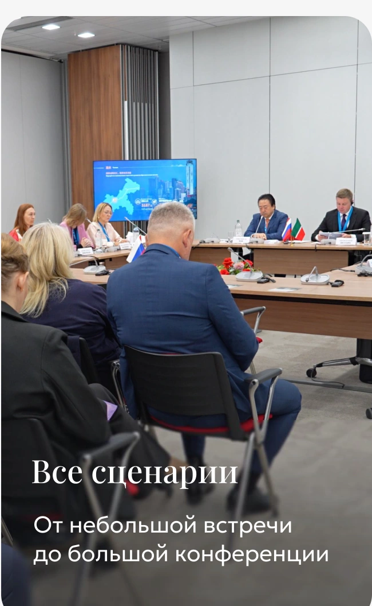
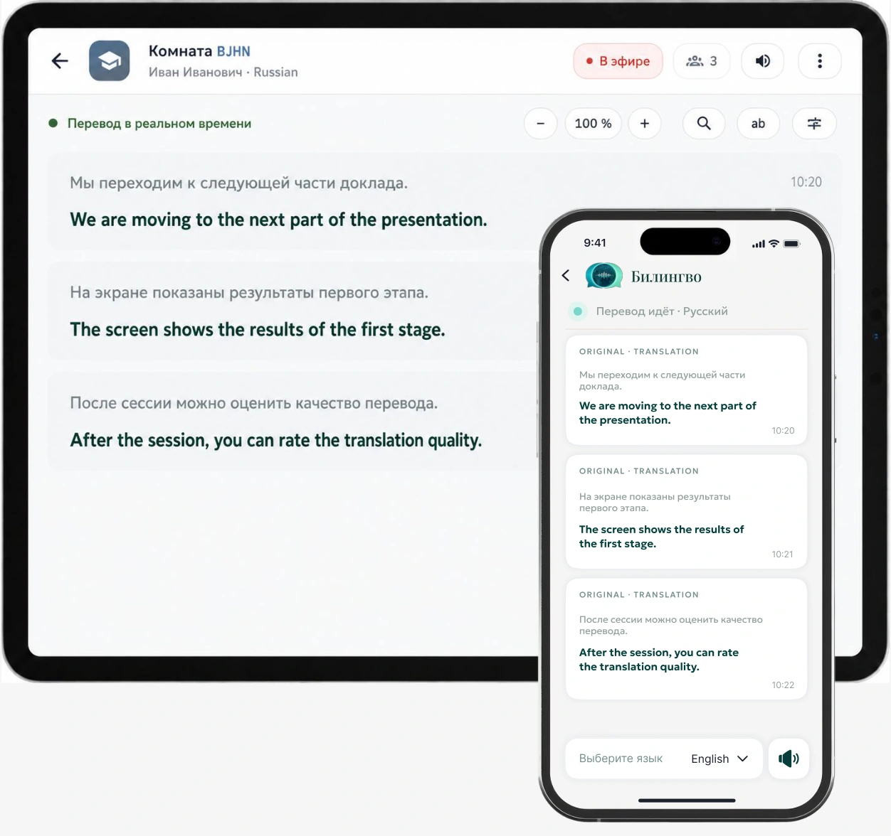
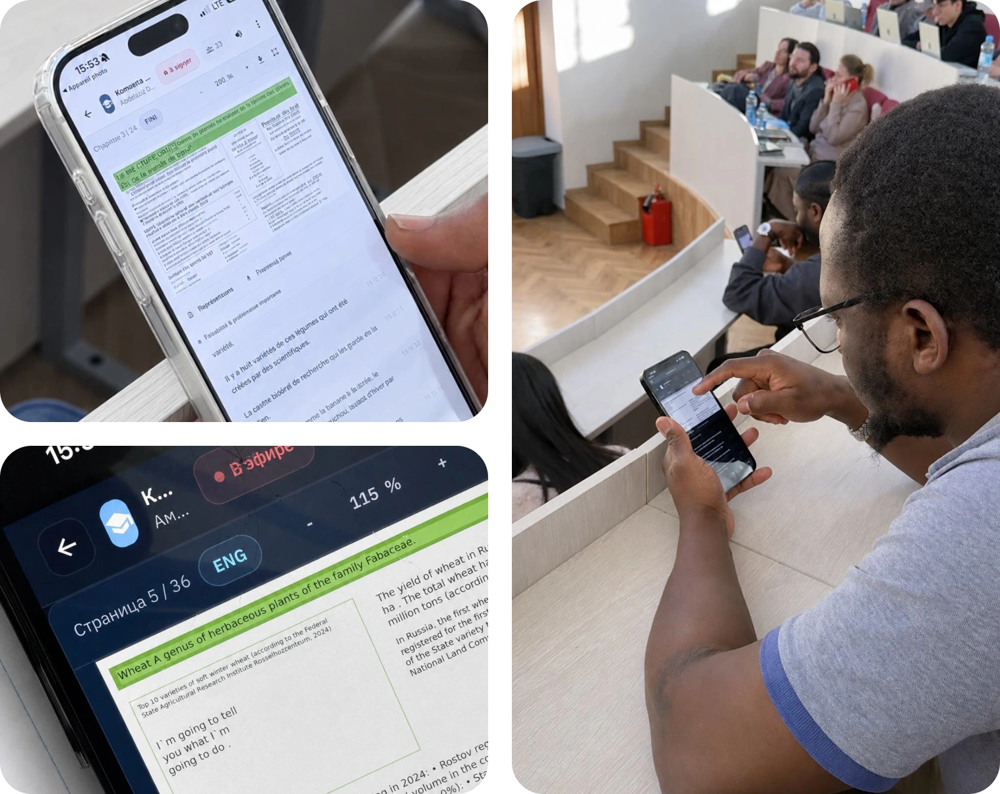
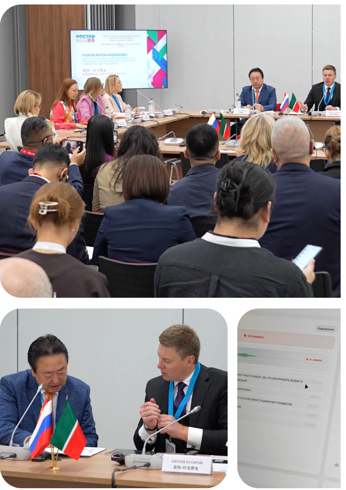
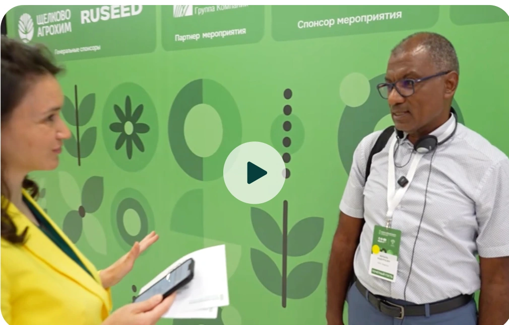
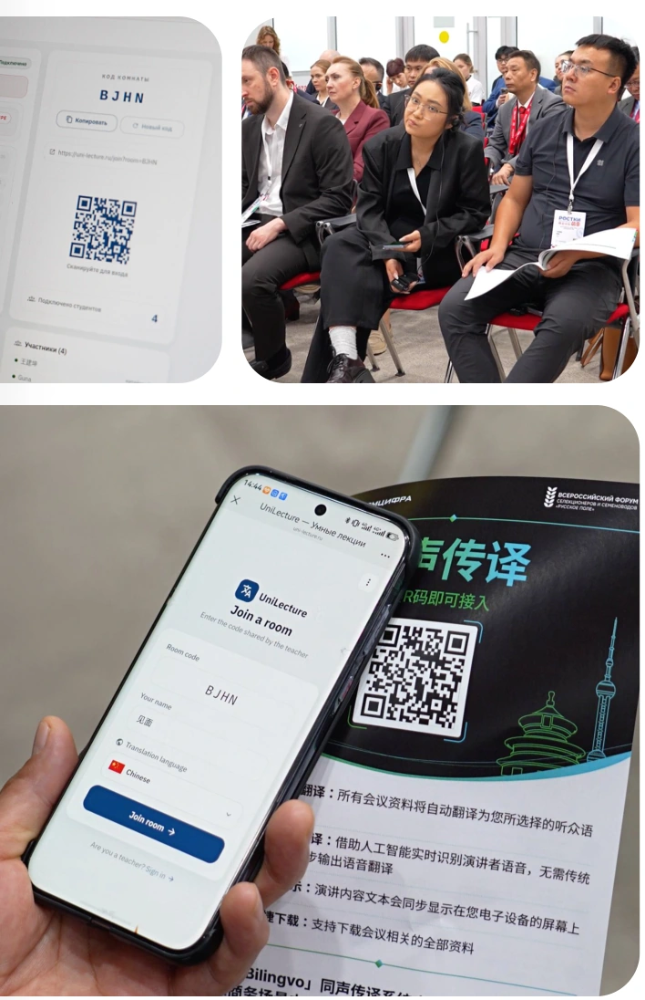

Образование
Лекции и конференции:
речь и материалы на языке участника.
Поддерживаем более 100 языков: каждый слушатель
получает перевод и материалы на своем языке — без
задержек
Все, что нужно, — отсканировать QR-код или ввести
код комнаты в браузере. Не требуется установка
приложений или специализированного
оборудования

Присоединяйтесь в качестве слушателя

Участник слышит перевод и видит материалы на своем языке.
Бригаду переводчиков и кабины не ставим.
Слушатели открывают перевод в браузере.
Приложение ставить не нужно, кабины тоже не нужны.

Один способ перевода: и для короткой встречи, и для большого зала.
Лекции и конференции:
речь и материалы на языке участника.
Пленарные сессии, трансляции и смешанный зал. Один перевод на всех.
Совещания, советы директоров и встречи с клиентами на нескольких языках.
Очные и гибридные мероприятия. Данные можно оставить у заказчика.
Съезды, форумы и рабочие группы без кабин на каждую делегацию.

Телефон, планшет или ноутбук открывают одну и ту же сессию в браузере. Каждый участник выбирает свой язык и решает, читать перевод или слушать.

Спикер выступал как обычно. Для закупки проводим показ на вашей программе.

Два реальных видеоотзыва и материалы, снятые во время использования
продукта.


Участник отмечает ясный перевод и удобство сочетания текста с озвучкой, в том числе при работе с арабским языком.
Жилаль Абдерразек · INRA, Марокко

Участник слышит перевод и видит материалы на своем языке
Вместо отдельных сервисов, бригады переводчиков и кабин на каждый язык — одно подключение.
Синхронный перевод речи. Новую бригаду на каждый язык не набираем.
Материалы выступления идут на языке участника и меняются вместе с докладом.
Перевод можно читать с экрана, а не только слушать.
Перевод слушают со своего устройства. Кабины на группу не ставим.
Для конференции, совещания, лекции и трансляции. Дешевле бригады переводчиков, без кабин.
Новый язык не требует новой бригады и кабин. Достаточно одного подключения.
Участник слышит перевод и видит материалы выступления одновременно.
Языки подбираем под программу. Пары и термины проверяем на показе.
Зал входит по QR или ссылке в обычном браузере.
Продукт АО «Агропромцифра». В реестре отечественного ПО.
Если чужое облако не подходит, систему ставим у вас.
С IT договариваемся, где будут речь, материалы и перевод. Если чужое облако не подходит — систему ставим у заказчика.
Речь и материалы не обязательно отправлять в чужое облако.
Звук, доступ и хранение собираем вместе с площадкой.
Разрабатываем и сопровождаем сами.
Участник слышит перевод и видит материалы на своем языке
Цена, форматы, языки, точность, звук и данные.
Сначала показ на ваших материалах. Затем считаем стоимость по языкам, длительности, залу и размещению данных. Бригаду переводчиков и кабины на каждый язык в смету не закладываем.
Для совещаний, лекций, конференций, трансляций и смешанного зала.
Сканирует QR-код или вводит код комнаты в браузере. Приложение устанавливать не нужно.
Более 100 языков. Языковые пары и термины вашей программы проверяем на показе.
Перевод и термины проверяем на отрывке вашего выступления до запуска.
Слушатель открывает перевод в браузере на своем устройстве. Кабины и установка приложения не нужны.
Место обработки речи, материалов и перевода согласуем с IT до запуска. Возможно размещение у заказчика.
Этот вопрос можно обсудить на демонстрации для вашей образовательной программы.
Уточним языки, материалы, дату показа, площадку и звук. Проведем показ на отрывке вашего выступления.
Напишите на sales@agropromcifra.ru или позвоните +7 (495) 260-14-16.